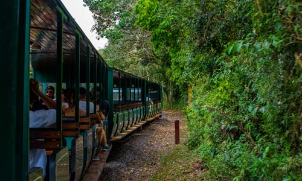
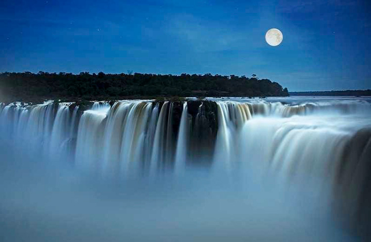
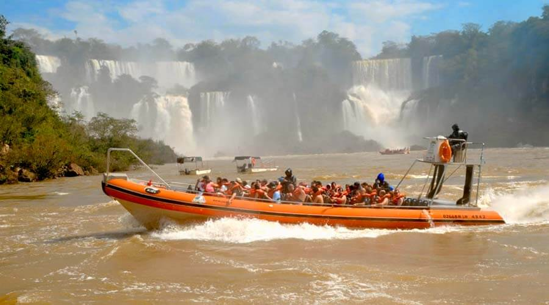
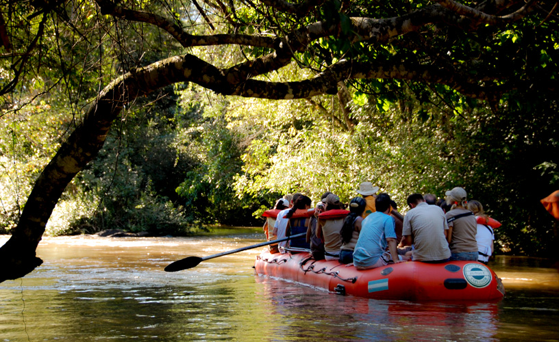

El Río Iguazú, que significa en guaraní agua grande, desemboca en el Paraná creando un manto de agua de un ancho de 1500 metros, que salpica islas e islotes hasta llegar a un barranco de lava formado hace 120 millones de años. El Parque Nacional Iguazú conserva la mayor biodiversidad de la ecorregión de la selva paranaense del país.
El área está enmarcada por la exuberante selva en unas de las regiones con mayor biodiversidad del continente.
Las visitas a las Cataratas comienzan en la ciudad de Puerto Iguazú (Arg) y Foz do Iguaçú (Bra), la zona se la conoce como de las “Tres Fronteras” porque a través de la confluencia del río Paraná y el río Iguazú limitan Argentina, Paraguay y Brasil
A las Cataratas se las puede conocer a través de dos circuitos: uno inferior y otro superior. Desde el inferior se llega a la base de los saltos, donde la fuerza del agua se transforma en rocío o vapor que moja a los concurrentes. La experiencia es única y vale la pena animarse a la aventura. Desde este circuito también se puede tomar un bote con destino a la isla San Martín.
En el circuito superior, el paseo es más sedentario. Las vistas panorámicas desde las pasarelas y los miradores hacen de la estadía una experiencia inolvidable.
Este ambiente es conocido popularmente con el nombre de Selva Misionera. Aquí se encuentra la mitad de las especies de aves registradas en el territorio argentino y la mayor diversidad de orquídeas del país, para citar sólo algunos ejemplos.
El parque fue creado en 1934 y constituye uno de los primeros de la Argentina. Además de su belleza escénica, tiene alto valor científico, ya que brinda el contexto para estudiar especies en peligro de extinción, como el yaguareté. El área es una “escuela” al aire libre donde niños y jóvenes pueden comprender las múltiples relaciones que existen entre los seres vivos. Además, el movimiento generado por el turismo es el principal propulsor del desarrollo económico de la región.
¿COMO LLEGAR?
Las Cataratas del Iguazú se encuentran a aproximadamente 1640 kilómetros de Buenos Aires y a 300 kilómetros de Posadas (Capital de la Provincia de Misiones). Puerto Iguazú cuenta con un aeropuerto internacional.
A las Cataratas se puede acceder en auto, en avión o compañía de micros (buses). Para estadías cortas se recomienda viajar en avión. Pero si uno cuenta con más de 4 días, llegar a Iguazú en forma terrestre no es un problema.
Durante el transcurso del año, la temperatura generalmente varía de 12°C a 32°C en verano y 14°C en invierno. Por lo tanto, la época más propicia para visitar el Parque es simplemente… todo el año.
Las Cataratas son compartidas por Argentina y Brasil, ya que el río Iguazú es el límite de estos dos países. Las Cataratas del Iguazú están resguardadas, tanto del lado argentino como brasilero, por parques nacionales.
¿QUE HACER?
Tren Ecológico de la Selva
Partiendo desde la Estación Central con destino a las estaciones Cataratas y Garganta, el tren ofrece un paseo sin igual en el corazón del Parque. Las locomotoras son eléctricas o a GLP (gas licuado de petróleo), lo que asegura un mínimo impacto en el ambiente. Un paseo lleno de emoción en donde poco a poco vas escuchando un rugido que te llena de emoción, cuando descubres por primera vez la caída de agua más impresionante y majestuosa del Parque, con más de 80 metros de altura y su abundante caudal.
Paseo de Luna Llena
La actividad se inicia con un paseo nocturno en el Tren Ecológico de la Selva hasta llegar a la Estación Garganta, donde comienza una maravillosa caminata hasta el Balcón de Garganta del Diablo por pasarelas que atraviesan el río Iguazú. Duración: 2 horas y media, se suspende por lluvia (incluso el mismo día de la actividad).
Gran Aventura
La excursión comienza en el Centro de Visitantes, desde allí comienza el recorrido en vehículos especiales por el Sendero Yacaratiá, que permite apreciar la selva en todo su esplendor. Después de 5 km. se arriba a Puerto Macuco donde se toman los gomones (lanchas) para navegar hacia el interior del cañón del Río Iguazú. Duración: 1 hora.
Paseo Ecológico
La excursión se lleva a cabo en botes a remo, es muy tranquilo ya que permite contemplar la naturaleza. Se realiza desde la Estación Garganta del Diablo navegando río abajo por más de 2.5 km. El paseo es ideal para descubrir la flora y fauna de la selva. Muchas veces se observan diferentes animales como coatíes, tucanes, monos y yacarés. El paseo termina en el embarcadero de Tres Marías, cerca de la Estación Cataratas. Duración: 20 minutos..
¿DONDE ALOJARSE?
Loi Suites Hotel
Loi Suites Hotel
Selva Iryapú s/n, N3370 Puerto Iguazú, Misiones
Tel: 011 2256-2723
★ ★ ★ ★ ★
Reserva YA
Iguazu Grand Hotel
Iguazu Grand Hotel
RN12 KM 1640 3370, Puerto Iguazú, Misiones
Tel: 03757 49-8050
★ ★ ★ ★ ★
Reserva YA
Panoramic Grand Hotel
Panoramic Grand Hotel
Cordoba, Félix de Azara y, N3370 Puerto Iguazú, Misiones
Tel: 03757 49-8100
★ ★ ★ ★ ★
Reserva YA
___________________________________________________________________
¿DONDE COMER?
La Misionerita
La Misionerita
Perito Moreno 207 FME, N3370 Puerto Iguazú, Misiones
Tel: 03757 42-4639
★ ★ ★ ★
+Info
Excelso Coffee Co.
Excelso Coffee Co.
Av. Misiones 88, N3370 Puerto Iguazú, Misiones
Tel: 011 6739-1872
★ ★ ★ ★ ★
+Info
La Mamma Pastas and Salsas
La Mamma Pastas and Salsas
C. Bonpland 217, Puerto Iguazú, Misiones
Tel: 03757 42-4594
★ ★ ★ ★ ★
+Info